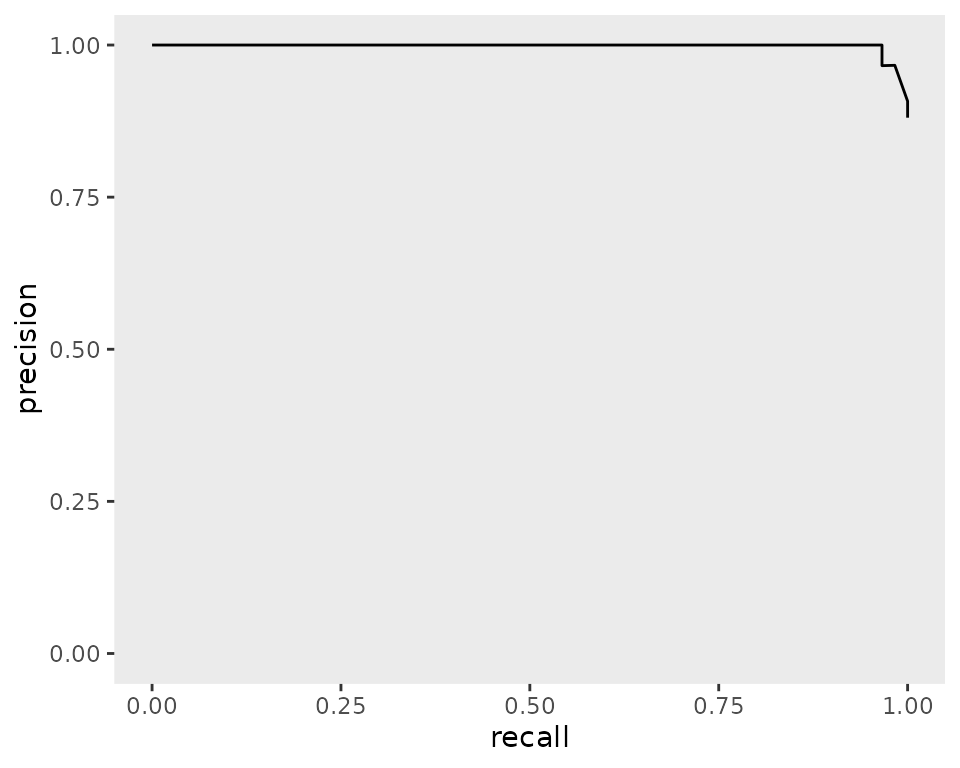
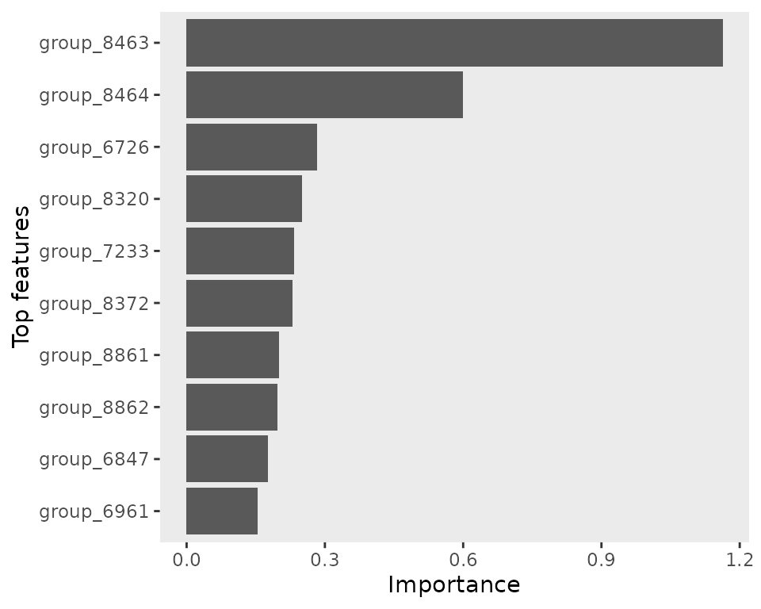
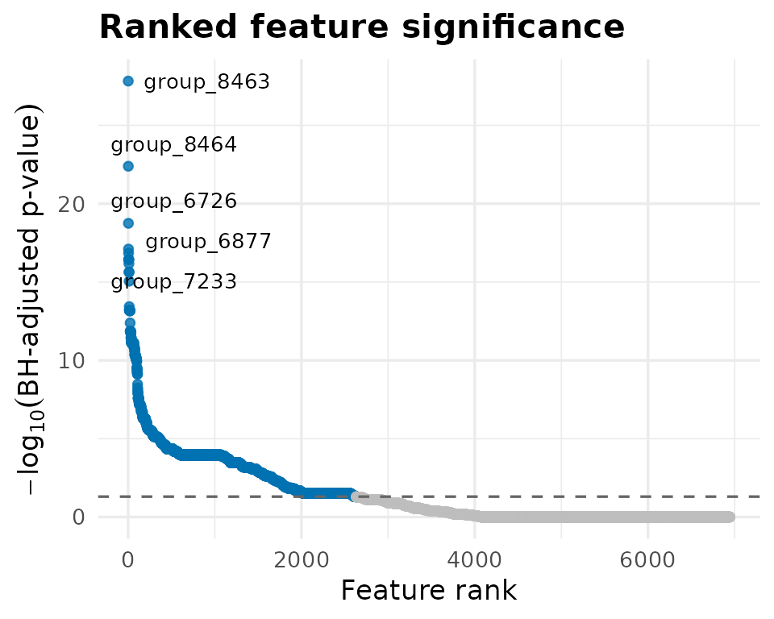

amRml predicts antimicrobial resistance (AMR) from
bacterial genomic features. It consumes a DuckDB produced by
amRdata and produces ML matrices, tuned logistic regression
models, per-genome predictions, feature importances, and Fisher’s exact
tests as a non-ML baseline.
This vignette uses the Shigella flexneri (Sfl)
DuckDB bundled in inst/extdata.
fixture <- system.file("extdata", "Sfl_parquet.duckdb", package = "amRml")
out_dir <- file.path(tempdir(), "amRml_vignette")
dir.create(out_dir, showWarnings = FALSE, recursive = TRUE)generateMLInputs() reads the bug-level DuckDB (metadata
+ feature parquets) and writes one long-format sparse parquet per drug ×
feature × encoding combination into out_path/matrix/. With
stratify_by, it additionally writes year- or
country-stratified matrices into matrix_year/ or
matrix_country/.
generateMLInputs(
parquet_duckdb_path = fixture,
out_path = out_dir,
n_fold = 5,
split = c(1, 0),
min_n = 25,
verbosity = "minimal"
)
#> Selected mode: CV (n_fold = 5), train = 1, val = 0, test = 0
#> Matrix output directory: /tmp/RtmpaDp8kK/amRml_vignette/matrix_year
#> Connected to DuckDB for bug: Sfl
#> Building ML matrices for drug_year: FOX_2015-2019
#> Building ML matrices for drug_year: TET_2015-2019
#> Building ML matrices for drug_year: CRO_2015-2019
#> Building ML matrices for drug_year: FEP_2015-2019
#> Building ML matrices for drug_year: TMP_2015-2019
#> Exported matrix: /tmp/RtmpaDp8kK/amRml_vignette/matrix_year/Sfl_drug_year_TMP_2015-2019_genes_counts_sparse.parquet
#> Exported matrix: /tmp/RtmpaDp8kK/amRml_vignette/matrix_year/Sfl_drug_year_TMP_2015-2019_genes_binary_sparse.parquet
#> Exported matrix: /tmp/RtmpaDp8kK/amRml_vignette/matrix_year/Sfl_drug_year_TMP_2015-2019_genes_binary_sparse.parquet
#> Exported matrix: /tmp/RtmpaDp8kK/amRml_vignette/matrix_year/Sfl_drug_year_TMP_2015-2019_proteins_counts_sparse.parquet
#> Exported matrix: /tmp/RtmpaDp8kK/amRml_vignette/matrix_year/Sfl_drug_year_TMP_2015-2019_proteins_binary_sparse.parquet
#> Exported matrix: /tmp/RtmpaDp8kK/amRml_vignette/matrix_year/Sfl_drug_year_TMP_2015-2019_proteins_binary_sparse.parquet
#> Exported matrix: /tmp/RtmpaDp8kK/amRml_vignette/matrix_year/Sfl_drug_year_TMP_2015-2019_domains_counts_sparse.parquet
#> Exported matrix: /tmp/RtmpaDp8kK/amRml_vignette/matrix_year/Sfl_drug_year_TMP_2015-2019_domains_binary_sparse.parquet
#> Exported matrix: /tmp/RtmpaDp8kK/amRml_vignette/matrix_year/Sfl_drug_year_TMP_2015-2019_domains_binary_sparse.parquet
#> Exported matrix: /tmp/RtmpaDp8kK/amRml_vignette/matrix_year/Sfl_drug_year_TMP_2015-2019_struct_binary_sparse.parquet
#> Building ML matrices for drug_year: GEN_2015-2019
#> Building ML matrices for drug_year: AMP_2015-2019
#> Exported matrix: /tmp/RtmpaDp8kK/amRml_vignette/matrix_year/Sfl_drug_year_AMP_2015-2019_genes_counts_sparse.parquet
#> Exported matrix: /tmp/RtmpaDp8kK/amRml_vignette/matrix_year/Sfl_drug_year_AMP_2015-2019_genes_binary_sparse.parquet
#> Exported matrix: /tmp/RtmpaDp8kK/amRml_vignette/matrix_year/Sfl_drug_year_AMP_2015-2019_genes_binary_sparse.parquet
#> Exported matrix: /tmp/RtmpaDp8kK/amRml_vignette/matrix_year/Sfl_drug_year_AMP_2015-2019_proteins_counts_sparse.parquet
#> Exported matrix: /tmp/RtmpaDp8kK/amRml_vignette/matrix_year/Sfl_drug_year_AMP_2015-2019_proteins_binary_sparse.parquet
#> Exported matrix: /tmp/RtmpaDp8kK/amRml_vignette/matrix_year/Sfl_drug_year_AMP_2015-2019_proteins_binary_sparse.parquet
#> Exported matrix: /tmp/RtmpaDp8kK/amRml_vignette/matrix_year/Sfl_drug_year_AMP_2015-2019_domains_counts_sparse.parquet
#> Exported matrix: /tmp/RtmpaDp8kK/amRml_vignette/matrix_year/Sfl_drug_year_AMP_2015-2019_domains_binary_sparse.parquet
#> Exported matrix: /tmp/RtmpaDp8kK/amRml_vignette/matrix_year/Sfl_drug_year_AMP_2015-2019_domains_binary_sparse.parquet
#> Exported matrix: /tmp/RtmpaDp8kK/amRml_vignette/matrix_year/Sfl_drug_year_AMP_2015-2019_struct_binary_sparse.parquet
#> Building ML matrices for drug_year: AMX-CLA_2015-2019
#> Building ML matrices for drug_year: CAZ_2015-2019
#> Building ML matrices for drug_year: SMX_2015-2019
#> Building ML matrices for drug_year: CRO_2010-2014
#> Building ML matrices for drug_year: NAL_2015-2019
#> Building ML matrices for drug_year: CIP_2015-2019
#> Exported matrix: /tmp/RtmpaDp8kK/amRml_vignette/matrix_year/Sfl_drug_year_CIP_2015-2019_genes_counts_sparse.parquet
#> Exported matrix: /tmp/RtmpaDp8kK/amRml_vignette/matrix_year/Sfl_drug_year_CIP_2015-2019_genes_binary_sparse.parquet
#> Exported matrix: /tmp/RtmpaDp8kK/amRml_vignette/matrix_year/Sfl_drug_year_CIP_2015-2019_genes_binary_sparse.parquet
#> Exported matrix: /tmp/RtmpaDp8kK/amRml_vignette/matrix_year/Sfl_drug_year_CIP_2015-2019_proteins_counts_sparse.parquet
#> Exported matrix: /tmp/RtmpaDp8kK/amRml_vignette/matrix_year/Sfl_drug_year_CIP_2015-2019_proteins_binary_sparse.parquet
#> Exported matrix: /tmp/RtmpaDp8kK/amRml_vignette/matrix_year/Sfl_drug_year_CIP_2015-2019_proteins_binary_sparse.parquet
#> Exported matrix: /tmp/RtmpaDp8kK/amRml_vignette/matrix_year/Sfl_drug_year_CIP_2015-2019_domains_counts_sparse.parquet
#> Exported matrix: /tmp/RtmpaDp8kK/amRml_vignette/matrix_year/Sfl_drug_year_CIP_2015-2019_domains_binary_sparse.parquet
#> Exported matrix: /tmp/RtmpaDp8kK/amRml_vignette/matrix_year/Sfl_drug_year_CIP_2015-2019_domains_binary_sparse.parquet
#> Exported matrix: /tmp/RtmpaDp8kK/amRml_vignette/matrix_year/Sfl_drug_year_CIP_2015-2019_struct_binary_sparse.parquet
#> Building ML matrices for drug_year: CTX_2015-2019
#> Building ML matrices for drug_year: CHL_2015-2019
#> Building ML matrices for drug_year: MEM_2015-2019
#> Building ML matrices for drug_year: AZM_2015-2019
#> Exported matrix: /tmp/RtmpaDp8kK/amRml_vignette/matrix_year/Sfl_drug_year_AZM_2015-2019_genes_counts_sparse.parquet
#> Exported matrix: /tmp/RtmpaDp8kK/amRml_vignette/matrix_year/Sfl_drug_year_AZM_2015-2019_genes_binary_sparse.parquet
#> Exported matrix: /tmp/RtmpaDp8kK/amRml_vignette/matrix_year/Sfl_drug_year_AZM_2015-2019_genes_binary_sparse.parquet
#> Exported matrix: /tmp/RtmpaDp8kK/amRml_vignette/matrix_year/Sfl_drug_year_AZM_2015-2019_proteins_counts_sparse.parquet
#> Exported matrix: /tmp/RtmpaDp8kK/amRml_vignette/matrix_year/Sfl_drug_year_AZM_2015-2019_proteins_binary_sparse.parquet
#> Exported matrix: /tmp/RtmpaDp8kK/amRml_vignette/matrix_year/Sfl_drug_year_AZM_2015-2019_proteins_binary_sparse.parquet
#> Exported matrix: /tmp/RtmpaDp8kK/amRml_vignette/matrix_year/Sfl_drug_year_AZM_2015-2019_domains_counts_sparse.parquet
#> Exported matrix: /tmp/RtmpaDp8kK/amRml_vignette/matrix_year/Sfl_drug_year_AZM_2015-2019_domains_binary_sparse.parquet
#> Exported matrix: /tmp/RtmpaDp8kK/amRml_vignette/matrix_year/Sfl_drug_year_AZM_2015-2019_domains_binary_sparse.parquet
#> Exported matrix: /tmp/RtmpaDp8kK/amRml_vignette/matrix_year/Sfl_drug_year_AZM_2015-2019_struct_binary_sparse.parquet
#> Building ML matrices for drug_year: CST_2015-2019
#> Building ML matrices for drug_class_year: PEN_2015-2019
#> Exported matrix: /tmp/RtmpaDp8kK/amRml_vignette/matrix_year/Sfl_drug_class_year_PEN_2015-2019_genes_counts_sparse.parquet
#> Exported matrix: /tmp/RtmpaDp8kK/amRml_vignette/matrix_year/Sfl_drug_class_year_PEN_2015-2019_genes_binary_sparse.parquet
#> Exported matrix: /tmp/RtmpaDp8kK/amRml_vignette/matrix_year/Sfl_drug_class_year_PEN_2015-2019_genes_binary_sparse.parquet
#> Exported matrix: /tmp/RtmpaDp8kK/amRml_vignette/matrix_year/Sfl_drug_class_year_PEN_2015-2019_proteins_counts_sparse.parquet
#> Exported matrix: /tmp/RtmpaDp8kK/amRml_vignette/matrix_year/Sfl_drug_class_year_PEN_2015-2019_proteins_binary_sparse.parquet
#> Exported matrix: /tmp/RtmpaDp8kK/amRml_vignette/matrix_year/Sfl_drug_class_year_PEN_2015-2019_proteins_binary_sparse.parquet
#> Exported matrix: /tmp/RtmpaDp8kK/amRml_vignette/matrix_year/Sfl_drug_class_year_PEN_2015-2019_domains_counts_sparse.parquet
#> Exported matrix: /tmp/RtmpaDp8kK/amRml_vignette/matrix_year/Sfl_drug_class_year_PEN_2015-2019_domains_binary_sparse.parquet
#> Exported matrix: /tmp/RtmpaDp8kK/amRml_vignette/matrix_year/Sfl_drug_class_year_PEN_2015-2019_domains_binary_sparse.parquet
#> Exported matrix: /tmp/RtmpaDp8kK/amRml_vignette/matrix_year/Sfl_drug_class_year_PEN_2015-2019_struct_binary_sparse.parquet
#> Building ML matrices for drug_class_year: TMD_2015-2019
#> Exported matrix: /tmp/RtmpaDp8kK/amRml_vignette/matrix_year/Sfl_drug_class_year_TMD_2015-2019_genes_counts_sparse.parquet
#> Exported matrix: /tmp/RtmpaDp8kK/amRml_vignette/matrix_year/Sfl_drug_class_year_TMD_2015-2019_genes_binary_sparse.parquet
#> Exported matrix: /tmp/RtmpaDp8kK/amRml_vignette/matrix_year/Sfl_drug_class_year_TMD_2015-2019_genes_binary_sparse.parquet
#> Exported matrix: /tmp/RtmpaDp8kK/amRml_vignette/matrix_year/Sfl_drug_class_year_TMD_2015-2019_proteins_counts_sparse.parquet
#> Exported matrix: /tmp/RtmpaDp8kK/amRml_vignette/matrix_year/Sfl_drug_class_year_TMD_2015-2019_proteins_binary_sparse.parquet
#> Exported matrix: /tmp/RtmpaDp8kK/amRml_vignette/matrix_year/Sfl_drug_class_year_TMD_2015-2019_proteins_binary_sparse.parquet
#> Exported matrix: /tmp/RtmpaDp8kK/amRml_vignette/matrix_year/Sfl_drug_class_year_TMD_2015-2019_domains_counts_sparse.parquet
#> Exported matrix: /tmp/RtmpaDp8kK/amRml_vignette/matrix_year/Sfl_drug_class_year_TMD_2015-2019_domains_binary_sparse.parquet
#> Exported matrix: /tmp/RtmpaDp8kK/amRml_vignette/matrix_year/Sfl_drug_class_year_TMD_2015-2019_domains_binary_sparse.parquet
#> Exported matrix: /tmp/RtmpaDp8kK/amRml_vignette/matrix_year/Sfl_drug_class_year_TMD_2015-2019_struct_binary_sparse.parquet
#> Building ML matrices for drug_class_year: SUL_2015-2019
#> Building ML matrices for drug_class_year: AMG_2015-2019
#> Building ML matrices for drug_class_year: CEP_2015-2019
#> Building ML matrices for drug_class_year: AMF_2015-2019
#> Building ML matrices for drug_class_year: POL_2015-2019
#> Building ML matrices for drug_class_year: FLQ_2015-2019
#> Exported matrix: /tmp/RtmpaDp8kK/amRml_vignette/matrix_year/Sfl_drug_class_year_FLQ_2015-2019_genes_counts_sparse.parquet
#> Exported matrix: /tmp/RtmpaDp8kK/amRml_vignette/matrix_year/Sfl_drug_class_year_FLQ_2015-2019_genes_binary_sparse.parquet
#> Exported matrix: /tmp/RtmpaDp8kK/amRml_vignette/matrix_year/Sfl_drug_class_year_FLQ_2015-2019_genes_binary_sparse.parquet
#> Exported matrix: /tmp/RtmpaDp8kK/amRml_vignette/matrix_year/Sfl_drug_class_year_FLQ_2015-2019_proteins_counts_sparse.parquet
#> Exported matrix: /tmp/RtmpaDp8kK/amRml_vignette/matrix_year/Sfl_drug_class_year_FLQ_2015-2019_proteins_binary_sparse.parquet
#> Exported matrix: /tmp/RtmpaDp8kK/amRml_vignette/matrix_year/Sfl_drug_class_year_FLQ_2015-2019_proteins_binary_sparse.parquet
#> Exported matrix: /tmp/RtmpaDp8kK/amRml_vignette/matrix_year/Sfl_drug_class_year_FLQ_2015-2019_domains_counts_sparse.parquet
#> Exported matrix: /tmp/RtmpaDp8kK/amRml_vignette/matrix_year/Sfl_drug_class_year_FLQ_2015-2019_domains_binary_sparse.parquet
#> Exported matrix: /tmp/RtmpaDp8kK/amRml_vignette/matrix_year/Sfl_drug_class_year_FLQ_2015-2019_domains_binary_sparse.parquet
#> Exported matrix: /tmp/RtmpaDp8kK/amRml_vignette/matrix_year/Sfl_drug_class_year_FLQ_2015-2019_struct_binary_sparse.parquet
#> Building ML matrices for drug_class_year: PEN-BLI_2015-2019
#> Building ML matrices for drug_class_year: TET_2015-2019
#> Building ML matrices for drug_class_year: CAR_2015-2019
#> Building ML matrices for drug_class_year: QUI_2015-2019
#> Building ML matrices for drug_class_year: MAC_2015-2019
#> Exported matrix: /tmp/RtmpaDp8kK/amRml_vignette/matrix_year/Sfl_drug_class_year_MAC_2015-2019_genes_counts_sparse.parquet
#> Exported matrix: /tmp/RtmpaDp8kK/amRml_vignette/matrix_year/Sfl_drug_class_year_MAC_2015-2019_genes_binary_sparse.parquet
#> Exported matrix: /tmp/RtmpaDp8kK/amRml_vignette/matrix_year/Sfl_drug_class_year_MAC_2015-2019_genes_binary_sparse.parquet
#> Exported matrix: /tmp/RtmpaDp8kK/amRml_vignette/matrix_year/Sfl_drug_class_year_MAC_2015-2019_proteins_counts_sparse.parquet
#> Exported matrix: /tmp/RtmpaDp8kK/amRml_vignette/matrix_year/Sfl_drug_class_year_MAC_2015-2019_proteins_binary_sparse.parquet
#> Exported matrix: /tmp/RtmpaDp8kK/amRml_vignette/matrix_year/Sfl_drug_class_year_MAC_2015-2019_proteins_binary_sparse.parquet
#> Exported matrix: /tmp/RtmpaDp8kK/amRml_vignette/matrix_year/Sfl_drug_class_year_MAC_2015-2019_domains_counts_sparse.parquet
#> Exported matrix: /tmp/RtmpaDp8kK/amRml_vignette/matrix_year/Sfl_drug_class_year_MAC_2015-2019_domains_binary_sparse.parquet
#> Exported matrix: /tmp/RtmpaDp8kK/amRml_vignette/matrix_year/Sfl_drug_class_year_MAC_2015-2019_domains_binary_sparse.parquet
#> Exported matrix: /tmp/RtmpaDp8kK/amRml_vignette/matrix_year/Sfl_drug_class_year_MAC_2015-2019_struct_binary_sparse.parquet
#> Building ML matrices for drug_class_year: CEP_2010-2014
#> All LOO matrices generated and saved.
#> Matrix output directory: /tmp/RtmpaDp8kK/amRml_vignette/matrix_country
#> Connected to DuckDB for bug: Sfl
#> Building ML matrices for drug_country: NAL_PRT
#> Building ML matrices for drug_country: CIP_PRT
#> Building ML matrices for drug_country: CTX_PRT
#> Building ML matrices for drug_country: CHL_PRT
#> Building ML matrices for drug_country: MEM_PRT
#> Building ML matrices for drug_country: CRO_AUS
#> Building ML matrices for drug_country: CRO_THA
#> Building ML matrices for drug_country: FEP_PRT
#> Building ML matrices for drug_country: TMP_PRT
#> Building ML matrices for drug_country: GEN_PRT
#> Building ML matrices for drug_country: AMP_AUS
#> Exported matrix: /tmp/RtmpaDp8kK/amRml_vignette/matrix_country/Sfl_drug_country_AMP_AUS_genes_counts_sparse.parquet
#> Exported matrix: /tmp/RtmpaDp8kK/amRml_vignette/matrix_country/Sfl_drug_country_AMP_AUS_genes_binary_sparse.parquet
#> Exported matrix: /tmp/RtmpaDp8kK/amRml_vignette/matrix_country/Sfl_drug_country_AMP_AUS_genes_binary_sparse.parquet
#> Exported matrix: /tmp/RtmpaDp8kK/amRml_vignette/matrix_country/Sfl_drug_country_AMP_AUS_proteins_counts_sparse.parquet
#> Exported matrix: /tmp/RtmpaDp8kK/amRml_vignette/matrix_country/Sfl_drug_country_AMP_AUS_proteins_binary_sparse.parquet
#> Exported matrix: /tmp/RtmpaDp8kK/amRml_vignette/matrix_country/Sfl_drug_country_AMP_AUS_proteins_binary_sparse.parquet
#> Exported matrix: /tmp/RtmpaDp8kK/amRml_vignette/matrix_country/Sfl_drug_country_AMP_AUS_domains_counts_sparse.parquet
#> Exported matrix: /tmp/RtmpaDp8kK/amRml_vignette/matrix_country/Sfl_drug_country_AMP_AUS_domains_binary_sparse.parquet
#> Exported matrix: /tmp/RtmpaDp8kK/amRml_vignette/matrix_country/Sfl_drug_country_AMP_AUS_domains_binary_sparse.parquet
#> Exported matrix: /tmp/RtmpaDp8kK/amRml_vignette/matrix_country/Sfl_drug_country_AMP_AUS_struct_binary_sparse.parquet
#> Building ML matrices for drug_country: AMP_PRT
#> Building ML matrices for drug_country: AMX-CLA_PRT
#> Building ML matrices for drug_country: CAZ_PRT
#> Building ML matrices for drug_country: SMX_PRT
#> Building ML matrices for drug_country: TMP_AUS
#> Exported matrix: /tmp/RtmpaDp8kK/amRml_vignette/matrix_country/Sfl_drug_country_TMP_AUS_genes_counts_sparse.parquet
#> Exported matrix: /tmp/RtmpaDp8kK/amRml_vignette/matrix_country/Sfl_drug_country_TMP_AUS_genes_binary_sparse.parquet
#> Exported matrix: /tmp/RtmpaDp8kK/amRml_vignette/matrix_country/Sfl_drug_country_TMP_AUS_genes_binary_sparse.parquet
#> Exported matrix: /tmp/RtmpaDp8kK/amRml_vignette/matrix_country/Sfl_drug_country_TMP_AUS_proteins_counts_sparse.parquet
#> Exported matrix: /tmp/RtmpaDp8kK/amRml_vignette/matrix_country/Sfl_drug_country_TMP_AUS_proteins_binary_sparse.parquet
#> Exported matrix: /tmp/RtmpaDp8kK/amRml_vignette/matrix_country/Sfl_drug_country_TMP_AUS_proteins_binary_sparse.parquet
#> Exported matrix: /tmp/RtmpaDp8kK/amRml_vignette/matrix_country/Sfl_drug_country_TMP_AUS_domains_counts_sparse.parquet
#> Exported matrix: /tmp/RtmpaDp8kK/amRml_vignette/matrix_country/Sfl_drug_country_TMP_AUS_domains_binary_sparse.parquet
#> Exported matrix: /tmp/RtmpaDp8kK/amRml_vignette/matrix_country/Sfl_drug_country_TMP_AUS_domains_binary_sparse.parquet
#> Exported matrix: /tmp/RtmpaDp8kK/amRml_vignette/matrix_country/Sfl_drug_country_TMP_AUS_struct_binary_sparse.parquet
#> Building ML matrices for drug_country: GEN_AUS
#> Building ML matrices for drug_country: FOX_PRT
#> Building ML matrices for drug_country: TET_PRT
#> Building ML matrices for drug_country: CIP_AUS
#> Exported matrix: /tmp/RtmpaDp8kK/amRml_vignette/matrix_country/Sfl_drug_country_CIP_AUS_genes_counts_sparse.parquet
#> Exported matrix: /tmp/RtmpaDp8kK/amRml_vignette/matrix_country/Sfl_drug_country_CIP_AUS_genes_binary_sparse.parquet
#> Exported matrix: /tmp/RtmpaDp8kK/amRml_vignette/matrix_country/Sfl_drug_country_CIP_AUS_genes_binary_sparse.parquet
#> Exported matrix: /tmp/RtmpaDp8kK/amRml_vignette/matrix_country/Sfl_drug_country_CIP_AUS_proteins_counts_sparse.parquet
#> Exported matrix: /tmp/RtmpaDp8kK/amRml_vignette/matrix_country/Sfl_drug_country_CIP_AUS_proteins_binary_sparse.parquet
#> Exported matrix: /tmp/RtmpaDp8kK/amRml_vignette/matrix_country/Sfl_drug_country_CIP_AUS_proteins_binary_sparse.parquet
#> Exported matrix: /tmp/RtmpaDp8kK/amRml_vignette/matrix_country/Sfl_drug_country_CIP_AUS_domains_counts_sparse.parquet
#> Exported matrix: /tmp/RtmpaDp8kK/amRml_vignette/matrix_country/Sfl_drug_country_CIP_AUS_domains_binary_sparse.parquet
#> Exported matrix: /tmp/RtmpaDp8kK/amRml_vignette/matrix_country/Sfl_drug_country_CIP_AUS_domains_binary_sparse.parquet
#> Exported matrix: /tmp/RtmpaDp8kK/amRml_vignette/matrix_country/Sfl_drug_country_CIP_AUS_struct_binary_sparse.parquet
#> Building ML matrices for drug_country: MEM_AUS
#> Building ML matrices for drug_country: AZM_AUS
#> Exported matrix: /tmp/RtmpaDp8kK/amRml_vignette/matrix_country/Sfl_drug_country_AZM_AUS_genes_counts_sparse.parquet
#> Exported matrix: /tmp/RtmpaDp8kK/amRml_vignette/matrix_country/Sfl_drug_country_AZM_AUS_genes_binary_sparse.parquet
#> Exported matrix: /tmp/RtmpaDp8kK/amRml_vignette/matrix_country/Sfl_drug_country_AZM_AUS_genes_binary_sparse.parquet
#> Exported matrix: /tmp/RtmpaDp8kK/amRml_vignette/matrix_country/Sfl_drug_country_AZM_AUS_proteins_counts_sparse.parquet
#> Exported matrix: /tmp/RtmpaDp8kK/amRml_vignette/matrix_country/Sfl_drug_country_AZM_AUS_proteins_binary_sparse.parquet
#> Exported matrix: /tmp/RtmpaDp8kK/amRml_vignette/matrix_country/Sfl_drug_country_AZM_AUS_proteins_binary_sparse.parquet
#> Exported matrix: /tmp/RtmpaDp8kK/amRml_vignette/matrix_country/Sfl_drug_country_AZM_AUS_domains_counts_sparse.parquet
#> Exported matrix: /tmp/RtmpaDp8kK/amRml_vignette/matrix_country/Sfl_drug_country_AZM_AUS_domains_binary_sparse.parquet
#> Exported matrix: /tmp/RtmpaDp8kK/amRml_vignette/matrix_country/Sfl_drug_country_AZM_AUS_domains_binary_sparse.parquet
#> Exported matrix: /tmp/RtmpaDp8kK/amRml_vignette/matrix_country/Sfl_drug_country_AZM_AUS_struct_binary_sparse.parquet
#> Building ML matrices for drug_country: CST_THA
#> Building ML matrices for drug_class_country: QUI_PRT
#> Building ML matrices for drug_class_country: FLQ_AUS
#> Exported matrix: /tmp/RtmpaDp8kK/amRml_vignette/matrix_country/Sfl_drug_class_country_FLQ_AUS_genes_counts_sparse.parquet
#> Exported matrix: /tmp/RtmpaDp8kK/amRml_vignette/matrix_country/Sfl_drug_class_country_FLQ_AUS_genes_binary_sparse.parquet
#> Exported matrix: /tmp/RtmpaDp8kK/amRml_vignette/matrix_country/Sfl_drug_class_country_FLQ_AUS_genes_binary_sparse.parquet
#> Exported matrix: /tmp/RtmpaDp8kK/amRml_vignette/matrix_country/Sfl_drug_class_country_FLQ_AUS_proteins_counts_sparse.parquet
#> Exported matrix: /tmp/RtmpaDp8kK/amRml_vignette/matrix_country/Sfl_drug_class_country_FLQ_AUS_proteins_binary_sparse.parquet
#> Exported matrix: /tmp/RtmpaDp8kK/amRml_vignette/matrix_country/Sfl_drug_class_country_FLQ_AUS_proteins_binary_sparse.parquet
#> Exported matrix: /tmp/RtmpaDp8kK/amRml_vignette/matrix_country/Sfl_drug_class_country_FLQ_AUS_domains_counts_sparse.parquet
#> Exported matrix: /tmp/RtmpaDp8kK/amRml_vignette/matrix_country/Sfl_drug_class_country_FLQ_AUS_domains_binary_sparse.parquet
#> Exported matrix: /tmp/RtmpaDp8kK/amRml_vignette/matrix_country/Sfl_drug_class_country_FLQ_AUS_domains_binary_sparse.parquet
#> Exported matrix: /tmp/RtmpaDp8kK/amRml_vignette/matrix_country/Sfl_drug_class_country_FLQ_AUS_struct_binary_sparse.parquet
#> Building ML matrices for drug_class_country: CAR_AUS
#> Building ML matrices for drug_class_country: PEN_PRT
#> Building ML matrices for drug_class_country: TMD_PRT
#> Building ML matrices for drug_class_country: SUL_PRT
#> Building ML matrices for drug_class_country: AMG_PRT
#> Building ML matrices for drug_class_country: CEP_AUS
#> Building ML matrices for drug_class_country: POL_THA
#> Building ML matrices for drug_class_country: CEP_THA
#> Building ML matrices for drug_class_country: CEP_PRT
#> Building ML matrices for drug_class_country: AMF_PRT
#> Building ML matrices for drug_class_country: PEN_AUS
#> Exported matrix: /tmp/RtmpaDp8kK/amRml_vignette/matrix_country/Sfl_drug_class_country_PEN_AUS_genes_counts_sparse.parquet
#> Exported matrix: /tmp/RtmpaDp8kK/amRml_vignette/matrix_country/Sfl_drug_class_country_PEN_AUS_genes_binary_sparse.parquet
#> Exported matrix: /tmp/RtmpaDp8kK/amRml_vignette/matrix_country/Sfl_drug_class_country_PEN_AUS_genes_binary_sparse.parquet
#> Exported matrix: /tmp/RtmpaDp8kK/amRml_vignette/matrix_country/Sfl_drug_class_country_PEN_AUS_proteins_counts_sparse.parquet
#> Exported matrix: /tmp/RtmpaDp8kK/amRml_vignette/matrix_country/Sfl_drug_class_country_PEN_AUS_proteins_binary_sparse.parquet
#> Exported matrix: /tmp/RtmpaDp8kK/amRml_vignette/matrix_country/Sfl_drug_class_country_PEN_AUS_proteins_binary_sparse.parquet
#> Exported matrix: /tmp/RtmpaDp8kK/amRml_vignette/matrix_country/Sfl_drug_class_country_PEN_AUS_domains_counts_sparse.parquet
#> Exported matrix: /tmp/RtmpaDp8kK/amRml_vignette/matrix_country/Sfl_drug_class_country_PEN_AUS_domains_binary_sparse.parquet
#> Exported matrix: /tmp/RtmpaDp8kK/amRml_vignette/matrix_country/Sfl_drug_class_country_PEN_AUS_domains_binary_sparse.parquet
#> Exported matrix: /tmp/RtmpaDp8kK/amRml_vignette/matrix_country/Sfl_drug_class_country_PEN_AUS_struct_binary_sparse.parquet
#> Building ML matrices for drug_class_country: TMD_AUS
#> Exported matrix: /tmp/RtmpaDp8kK/amRml_vignette/matrix_country/Sfl_drug_class_country_TMD_AUS_genes_counts_sparse.parquet
#> Exported matrix: /tmp/RtmpaDp8kK/amRml_vignette/matrix_country/Sfl_drug_class_country_TMD_AUS_genes_binary_sparse.parquet
#> Exported matrix: /tmp/RtmpaDp8kK/amRml_vignette/matrix_country/Sfl_drug_class_country_TMD_AUS_genes_binary_sparse.parquet
#> Exported matrix: /tmp/RtmpaDp8kK/amRml_vignette/matrix_country/Sfl_drug_class_country_TMD_AUS_proteins_counts_sparse.parquet
#> Exported matrix: /tmp/RtmpaDp8kK/amRml_vignette/matrix_country/Sfl_drug_class_country_TMD_AUS_proteins_binary_sparse.parquet
#> Exported matrix: /tmp/RtmpaDp8kK/amRml_vignette/matrix_country/Sfl_drug_class_country_TMD_AUS_proteins_binary_sparse.parquet
#> Exported matrix: /tmp/RtmpaDp8kK/amRml_vignette/matrix_country/Sfl_drug_class_country_TMD_AUS_domains_counts_sparse.parquet
#> Exported matrix: /tmp/RtmpaDp8kK/amRml_vignette/matrix_country/Sfl_drug_class_country_TMD_AUS_domains_binary_sparse.parquet
#> Exported matrix: /tmp/RtmpaDp8kK/amRml_vignette/matrix_country/Sfl_drug_class_country_TMD_AUS_domains_binary_sparse.parquet
#> Exported matrix: /tmp/RtmpaDp8kK/amRml_vignette/matrix_country/Sfl_drug_class_country_TMD_AUS_struct_binary_sparse.parquet
#> Building ML matrices for drug_class_country: AMG_AUS
#> Building ML matrices for drug_class_country: FLQ_PRT
#> Building ML matrices for drug_class_country: PEN-BLI_PRT
#> Building ML matrices for drug_class_country: TET_PRT
#> Building ML matrices for drug_class_country: CAR_PRT
#> Building ML matrices for drug_class_country: MAC_AUS
#> Exported matrix: /tmp/RtmpaDp8kK/amRml_vignette/matrix_country/Sfl_drug_class_country_MAC_AUS_genes_counts_sparse.parquet
#> Exported matrix: /tmp/RtmpaDp8kK/amRml_vignette/matrix_country/Sfl_drug_class_country_MAC_AUS_genes_binary_sparse.parquet
#> Exported matrix: /tmp/RtmpaDp8kK/amRml_vignette/matrix_country/Sfl_drug_class_country_MAC_AUS_genes_binary_sparse.parquet
#> Exported matrix: /tmp/RtmpaDp8kK/amRml_vignette/matrix_country/Sfl_drug_class_country_MAC_AUS_proteins_counts_sparse.parquet
#> Exported matrix: /tmp/RtmpaDp8kK/amRml_vignette/matrix_country/Sfl_drug_class_country_MAC_AUS_proteins_binary_sparse.parquet
#> Exported matrix: /tmp/RtmpaDp8kK/amRml_vignette/matrix_country/Sfl_drug_class_country_MAC_AUS_proteins_binary_sparse.parquet
#> Exported matrix: /tmp/RtmpaDp8kK/amRml_vignette/matrix_country/Sfl_drug_class_country_MAC_AUS_domains_counts_sparse.parquet
#> Exported matrix: /tmp/RtmpaDp8kK/amRml_vignette/matrix_country/Sfl_drug_class_country_MAC_AUS_domains_binary_sparse.parquet
#> Exported matrix: /tmp/RtmpaDp8kK/amRml_vignette/matrix_country/Sfl_drug_class_country_MAC_AUS_domains_binary_sparse.parquet
#> Exported matrix: /tmp/RtmpaDp8kK/amRml_vignette/matrix_country/Sfl_drug_class_country_MAC_AUS_struct_binary_sparse.parquet
#> All LOO matrices generated and saved.
#> Matrix output directory: /tmp/RtmpaDp8kK/amRml_vignette/matrix
#> Connected to DuckDB for bug: Sfl
#> Building ML matrices for drug: NAL
#> Building ML matrices for drug: CIP
#> Exported matrix: /tmp/RtmpaDp8kK/amRml_vignette/matrix/Sfl_drug_CIP_genes_counts_sparse.parquet
#> Exported matrix: /tmp/RtmpaDp8kK/amRml_vignette/matrix/Sfl_drug_CIP_genes_binary_sparse.parquet
#> Exported matrix: /tmp/RtmpaDp8kK/amRml_vignette/matrix/Sfl_drug_CIP_genes_binary_sparse.parquet
#> Exported matrix: /tmp/RtmpaDp8kK/amRml_vignette/matrix/Sfl_drug_CIP_proteins_counts_sparse.parquet
#> Exported matrix: /tmp/RtmpaDp8kK/amRml_vignette/matrix/Sfl_drug_CIP_proteins_binary_sparse.parquet
#> Exported matrix: /tmp/RtmpaDp8kK/amRml_vignette/matrix/Sfl_drug_CIP_proteins_binary_sparse.parquet
#> Exported matrix: /tmp/RtmpaDp8kK/amRml_vignette/matrix/Sfl_drug_CIP_domains_counts_sparse.parquet
#> Exported matrix: /tmp/RtmpaDp8kK/amRml_vignette/matrix/Sfl_drug_CIP_domains_binary_sparse.parquet
#> Exported matrix: /tmp/RtmpaDp8kK/amRml_vignette/matrix/Sfl_drug_CIP_domains_binary_sparse.parquet
#> Exported matrix: /tmp/RtmpaDp8kK/amRml_vignette/matrix/Sfl_drug_CIP_struct_binary_sparse.parquet
#> Building ML matrices for drug: GEN
#> Building ML matrices for drug: CRO
#> Exported matrix: /tmp/RtmpaDp8kK/amRml_vignette/matrix/Sfl_drug_CRO_genes_counts_sparse.parquet
#> Exported matrix: /tmp/RtmpaDp8kK/amRml_vignette/matrix/Sfl_drug_CRO_genes_binary_sparse.parquet
#> Exported matrix: /tmp/RtmpaDp8kK/amRml_vignette/matrix/Sfl_drug_CRO_genes_binary_sparse.parquet
#> Exported matrix: /tmp/RtmpaDp8kK/amRml_vignette/matrix/Sfl_drug_CRO_proteins_counts_sparse.parquet
#> Exported matrix: /tmp/RtmpaDp8kK/amRml_vignette/matrix/Sfl_drug_CRO_proteins_binary_sparse.parquet
#> Exported matrix: /tmp/RtmpaDp8kK/amRml_vignette/matrix/Sfl_drug_CRO_proteins_binary_sparse.parquet
#> Exported matrix: /tmp/RtmpaDp8kK/amRml_vignette/matrix/Sfl_drug_CRO_domains_counts_sparse.parquet
#> Exported matrix: /tmp/RtmpaDp8kK/amRml_vignette/matrix/Sfl_drug_CRO_domains_binary_sparse.parquet
#> Exported matrix: /tmp/RtmpaDp8kK/amRml_vignette/matrix/Sfl_drug_CRO_domains_binary_sparse.parquet
#> Exported matrix: /tmp/RtmpaDp8kK/amRml_vignette/matrix/Sfl_drug_CRO_struct_binary_sparse.parquet
#> Building ML matrices for drug: AMP
#> Exported matrix: /tmp/RtmpaDp8kK/amRml_vignette/matrix/Sfl_drug_AMP_genes_counts_sparse.parquet
#> Exported matrix: /tmp/RtmpaDp8kK/amRml_vignette/matrix/Sfl_drug_AMP_genes_binary_sparse.parquet
#> Exported matrix: /tmp/RtmpaDp8kK/amRml_vignette/matrix/Sfl_drug_AMP_genes_binary_sparse.parquet
#> Exported matrix: /tmp/RtmpaDp8kK/amRml_vignette/matrix/Sfl_drug_AMP_proteins_counts_sparse.parquet
#> Exported matrix: /tmp/RtmpaDp8kK/amRml_vignette/matrix/Sfl_drug_AMP_proteins_binary_sparse.parquet
#> Exported matrix: /tmp/RtmpaDp8kK/amRml_vignette/matrix/Sfl_drug_AMP_proteins_binary_sparse.parquet
#> Exported matrix: /tmp/RtmpaDp8kK/amRml_vignette/matrix/Sfl_drug_AMP_domains_counts_sparse.parquet
#> Exported matrix: /tmp/RtmpaDp8kK/amRml_vignette/matrix/Sfl_drug_AMP_domains_binary_sparse.parquet
#> Exported matrix: /tmp/RtmpaDp8kK/amRml_vignette/matrix/Sfl_drug_AMP_domains_binary_sparse.parquet
#> Exported matrix: /tmp/RtmpaDp8kK/amRml_vignette/matrix/Sfl_drug_AMP_struct_binary_sparse.parquet
#> Building ML matrices for drug: AMX-CLA
#> Building ML matrices for drug: TMP
#> Exported matrix: /tmp/RtmpaDp8kK/amRml_vignette/matrix/Sfl_drug_TMP_genes_counts_sparse.parquet
#> Exported matrix: /tmp/RtmpaDp8kK/amRml_vignette/matrix/Sfl_drug_TMP_genes_binary_sparse.parquet
#> Exported matrix: /tmp/RtmpaDp8kK/amRml_vignette/matrix/Sfl_drug_TMP_genes_binary_sparse.parquet
#> Exported matrix: /tmp/RtmpaDp8kK/amRml_vignette/matrix/Sfl_drug_TMP_proteins_counts_sparse.parquet
#> Exported matrix: /tmp/RtmpaDp8kK/amRml_vignette/matrix/Sfl_drug_TMP_proteins_binary_sparse.parquet
#> Exported matrix: /tmp/RtmpaDp8kK/amRml_vignette/matrix/Sfl_drug_TMP_proteins_binary_sparse.parquet
#> Exported matrix: /tmp/RtmpaDp8kK/amRml_vignette/matrix/Sfl_drug_TMP_domains_counts_sparse.parquet
#> Exported matrix: /tmp/RtmpaDp8kK/amRml_vignette/matrix/Sfl_drug_TMP_domains_binary_sparse.parquet
#> Exported matrix: /tmp/RtmpaDp8kK/amRml_vignette/matrix/Sfl_drug_TMP_domains_binary_sparse.parquet
#> Exported matrix: /tmp/RtmpaDp8kK/amRml_vignette/matrix/Sfl_drug_TMP_struct_binary_sparse.parquet
#> Building ML matrices for drug: SXZ
#> Building ML matrices for drug: AZM
#> Exported matrix: /tmp/RtmpaDp8kK/amRml_vignette/matrix/Sfl_drug_AZM_genes_counts_sparse.parquet
#> Exported matrix: /tmp/RtmpaDp8kK/amRml_vignette/matrix/Sfl_drug_AZM_genes_binary_sparse.parquet
#> Exported matrix: /tmp/RtmpaDp8kK/amRml_vignette/matrix/Sfl_drug_AZM_genes_binary_sparse.parquet
#> Exported matrix: /tmp/RtmpaDp8kK/amRml_vignette/matrix/Sfl_drug_AZM_proteins_counts_sparse.parquet
#> Exported matrix: /tmp/RtmpaDp8kK/amRml_vignette/matrix/Sfl_drug_AZM_proteins_binary_sparse.parquet
#> Exported matrix: /tmp/RtmpaDp8kK/amRml_vignette/matrix/Sfl_drug_AZM_proteins_binary_sparse.parquet
#> Exported matrix: /tmp/RtmpaDp8kK/amRml_vignette/matrix/Sfl_drug_AZM_domains_counts_sparse.parquet
#> Exported matrix: /tmp/RtmpaDp8kK/amRml_vignette/matrix/Sfl_drug_AZM_domains_binary_sparse.parquet
#> Exported matrix: /tmp/RtmpaDp8kK/amRml_vignette/matrix/Sfl_drug_AZM_domains_binary_sparse.parquet
#> Exported matrix: /tmp/RtmpaDp8kK/amRml_vignette/matrix/Sfl_drug_AZM_struct_binary_sparse.parquet
#> Building ML matrices for drug: CAZ
#> Building ML matrices for drug: TET
#> Building ML matrices for drug: CHL
#> Building ML matrices for drug: TMP-SMX
#> Building ML matrices for drug: CST
#> Building ML matrices for drug: CTX
#> Building ML matrices for drug: FOX
#> Building ML matrices for drug: FEP
#> Building ML matrices for drug: SMX
#> Building ML matrices for drug: MEM
#> Building ML matrices for drug_class: SUL
#> Building ML matrices for drug_class: TMD-SUL
#> Building ML matrices for drug_class: MAC
#> Exported matrix: /tmp/RtmpaDp8kK/amRml_vignette/matrix/Sfl_drug_class_MAC_genes_counts_sparse.parquet
#> Exported matrix: /tmp/RtmpaDp8kK/amRml_vignette/matrix/Sfl_drug_class_MAC_genes_binary_sparse.parquet
#> Exported matrix: /tmp/RtmpaDp8kK/amRml_vignette/matrix/Sfl_drug_class_MAC_genes_binary_sparse.parquet
#> Exported matrix: /tmp/RtmpaDp8kK/amRml_vignette/matrix/Sfl_drug_class_MAC_proteins_counts_sparse.parquet
#> Exported matrix: /tmp/RtmpaDp8kK/amRml_vignette/matrix/Sfl_drug_class_MAC_proteins_binary_sparse.parquet
#> Exported matrix: /tmp/RtmpaDp8kK/amRml_vignette/matrix/Sfl_drug_class_MAC_proteins_binary_sparse.parquet
#> Exported matrix: /tmp/RtmpaDp8kK/amRml_vignette/matrix/Sfl_drug_class_MAC_domains_counts_sparse.parquet
#> Exported matrix: /tmp/RtmpaDp8kK/amRml_vignette/matrix/Sfl_drug_class_MAC_domains_binary_sparse.parquet
#> Exported matrix: /tmp/RtmpaDp8kK/amRml_vignette/matrix/Sfl_drug_class_MAC_domains_binary_sparse.parquet
#> Exported matrix: /tmp/RtmpaDp8kK/amRml_vignette/matrix/Sfl_drug_class_MAC_struct_binary_sparse.parquet
#> Building ML matrices for drug_class: POL
#> Building ML matrices for drug_class: AMF
#> Building ML matrices for drug_class: FLQ
#> Exported matrix: /tmp/RtmpaDp8kK/amRml_vignette/matrix/Sfl_drug_class_FLQ_genes_counts_sparse.parquet
#> Exported matrix: /tmp/RtmpaDp8kK/amRml_vignette/matrix/Sfl_drug_class_FLQ_genes_binary_sparse.parquet
#> Exported matrix: /tmp/RtmpaDp8kK/amRml_vignette/matrix/Sfl_drug_class_FLQ_genes_binary_sparse.parquet
#> Exported matrix: /tmp/RtmpaDp8kK/amRml_vignette/matrix/Sfl_drug_class_FLQ_proteins_counts_sparse.parquet
#> Exported matrix: /tmp/RtmpaDp8kK/amRml_vignette/matrix/Sfl_drug_class_FLQ_proteins_binary_sparse.parquet
#> Exported matrix: /tmp/RtmpaDp8kK/amRml_vignette/matrix/Sfl_drug_class_FLQ_proteins_binary_sparse.parquet
#> Exported matrix: /tmp/RtmpaDp8kK/amRml_vignette/matrix/Sfl_drug_class_FLQ_domains_counts_sparse.parquet
#> Exported matrix: /tmp/RtmpaDp8kK/amRml_vignette/matrix/Sfl_drug_class_FLQ_domains_binary_sparse.parquet
#> Exported matrix: /tmp/RtmpaDp8kK/amRml_vignette/matrix/Sfl_drug_class_FLQ_domains_binary_sparse.parquet
#> Exported matrix: /tmp/RtmpaDp8kK/amRml_vignette/matrix/Sfl_drug_class_FLQ_struct_binary_sparse.parquet
#> Building ML matrices for drug_class: PEN
#> Exported matrix: /tmp/RtmpaDp8kK/amRml_vignette/matrix/Sfl_drug_class_PEN_genes_counts_sparse.parquet
#> Exported matrix: /tmp/RtmpaDp8kK/amRml_vignette/matrix/Sfl_drug_class_PEN_genes_binary_sparse.parquet
#> Exported matrix: /tmp/RtmpaDp8kK/amRml_vignette/matrix/Sfl_drug_class_PEN_genes_binary_sparse.parquet
#> Exported matrix: /tmp/RtmpaDp8kK/amRml_vignette/matrix/Sfl_drug_class_PEN_proteins_counts_sparse.parquet
#> Exported matrix: /tmp/RtmpaDp8kK/amRml_vignette/matrix/Sfl_drug_class_PEN_proteins_binary_sparse.parquet
#> Exported matrix: /tmp/RtmpaDp8kK/amRml_vignette/matrix/Sfl_drug_class_PEN_proteins_binary_sparse.parquet
#> Exported matrix: /tmp/RtmpaDp8kK/amRml_vignette/matrix/Sfl_drug_class_PEN_domains_counts_sparse.parquet
#> Exported matrix: /tmp/RtmpaDp8kK/amRml_vignette/matrix/Sfl_drug_class_PEN_domains_binary_sparse.parquet
#> Exported matrix: /tmp/RtmpaDp8kK/amRml_vignette/matrix/Sfl_drug_class_PEN_domains_binary_sparse.parquet
#> Exported matrix: /tmp/RtmpaDp8kK/amRml_vignette/matrix/Sfl_drug_class_PEN_struct_binary_sparse.parquet
#> Building ML matrices for drug_class: PEN-BLI
#> Building ML matrices for drug_class: CEP
#> Exported matrix: /tmp/RtmpaDp8kK/amRml_vignette/matrix/Sfl_drug_class_CEP_genes_counts_sparse.parquet
#> Exported matrix: /tmp/RtmpaDp8kK/amRml_vignette/matrix/Sfl_drug_class_CEP_genes_binary_sparse.parquet
#> Exported matrix: /tmp/RtmpaDp8kK/amRml_vignette/matrix/Sfl_drug_class_CEP_genes_binary_sparse.parquet
#> Exported matrix: /tmp/RtmpaDp8kK/amRml_vignette/matrix/Sfl_drug_class_CEP_proteins_counts_sparse.parquet
#> Exported matrix: /tmp/RtmpaDp8kK/amRml_vignette/matrix/Sfl_drug_class_CEP_proteins_binary_sparse.parquet
#> Exported matrix: /tmp/RtmpaDp8kK/amRml_vignette/matrix/Sfl_drug_class_CEP_proteins_binary_sparse.parquet
#> Exported matrix: /tmp/RtmpaDp8kK/amRml_vignette/matrix/Sfl_drug_class_CEP_domains_counts_sparse.parquet
#> Exported matrix: /tmp/RtmpaDp8kK/amRml_vignette/matrix/Sfl_drug_class_CEP_domains_binary_sparse.parquet
#> Exported matrix: /tmp/RtmpaDp8kK/amRml_vignette/matrix/Sfl_drug_class_CEP_domains_binary_sparse.parquet
#> Exported matrix: /tmp/RtmpaDp8kK/amRml_vignette/matrix/Sfl_drug_class_CEP_struct_binary_sparse.parquet
#> Building ML matrices for drug_class: TET
#> Building ML matrices for drug_class: TMD
#> Exported matrix: /tmp/RtmpaDp8kK/amRml_vignette/matrix/Sfl_drug_class_TMD_genes_counts_sparse.parquet
#> Exported matrix: /tmp/RtmpaDp8kK/amRml_vignette/matrix/Sfl_drug_class_TMD_genes_binary_sparse.parquet
#> Exported matrix: /tmp/RtmpaDp8kK/amRml_vignette/matrix/Sfl_drug_class_TMD_genes_binary_sparse.parquet
#> Exported matrix: /tmp/RtmpaDp8kK/amRml_vignette/matrix/Sfl_drug_class_TMD_proteins_counts_sparse.parquet
#> Exported matrix: /tmp/RtmpaDp8kK/amRml_vignette/matrix/Sfl_drug_class_TMD_proteins_binary_sparse.parquet
#> Exported matrix: /tmp/RtmpaDp8kK/amRml_vignette/matrix/Sfl_drug_class_TMD_proteins_binary_sparse.parquet
#> Exported matrix: /tmp/RtmpaDp8kK/amRml_vignette/matrix/Sfl_drug_class_TMD_domains_counts_sparse.parquet
#> Exported matrix: /tmp/RtmpaDp8kK/amRml_vignette/matrix/Sfl_drug_class_TMD_domains_binary_sparse.parquet
#> Exported matrix: /tmp/RtmpaDp8kK/amRml_vignette/matrix/Sfl_drug_class_TMD_domains_binary_sparse.parquet
#> Exported matrix: /tmp/RtmpaDp8kK/amRml_vignette/matrix/Sfl_drug_class_TMD_struct_binary_sparse.parquet
#> Building ML matrices for drug_class: AMG
#> Building ML matrices for drug_class: CAR
#> Building ML matrices for drug_class: QUI
#> Building MDR matrices for classes: PEN, PEN_TMD, TMD_MAC_PEN, TMD_PEN, TMD_PEN_MAC
#> Exported MDR matrix: /tmp/RtmpaDp8kK/amRml_vignette/MDR_matrix/Sfl_MDR_resistant_classes_genes_counts_sparse.parquet
#> Exported MDR matrix: /tmp/RtmpaDp8kK/amRml_vignette/MDR_matrix/Sfl_MDR_resistant_classes_genes_binary_sparse.parquet
#> Exported MDR matrix: /tmp/RtmpaDp8kK/amRml_vignette/MDR_matrix/Sfl_MDR_resistant_classes_genes_binary_sparse.parquet
#> Exported MDR matrix: /tmp/RtmpaDp8kK/amRml_vignette/MDR_matrix/Sfl_MDR_resistant_classes_proteins_counts_sparse.parquet
#> Exported MDR matrix: /tmp/RtmpaDp8kK/amRml_vignette/MDR_matrix/Sfl_MDR_resistant_classes_proteins_binary_sparse.parquet
#> Exported MDR matrix: /tmp/RtmpaDp8kK/amRml_vignette/MDR_matrix/Sfl_MDR_resistant_classes_proteins_binary_sparse.parquet
#> Exported MDR matrix: /tmp/RtmpaDp8kK/amRml_vignette/MDR_matrix/Sfl_MDR_resistant_classes_domains_counts_sparse.parquet
#> Exported MDR matrix: /tmp/RtmpaDp8kK/amRml_vignette/MDR_matrix/Sfl_MDR_resistant_classes_domains_binary_sparse.parquet
#> Exported MDR matrix: /tmp/RtmpaDp8kK/amRml_vignette/MDR_matrix/Sfl_MDR_resistant_classes_domains_binary_sparse.parquet
#> Exported MDR matrix: /tmp/RtmpaDp8kK/amRml_vignette/MDR_matrix/Sfl_MDR_resistant_classes_struct_binary_sparse.parquet
#> The MDR matrix has been generated and saved.
#> All matrices generated and saved.
list.files(file.path(out_dir, "matrix"))[1:5]
#> [1] "Sfl_drug_AMP_domains_binary_sparse.parquet"
#> [2] "Sfl_drug_AMP_domains_counts_sparse.parquet"
#> [3] "Sfl_drug_AMP_genes_binary_sparse.parquet"
#> [4] "Sfl_drug_AMP_genes_counts_sparse.parquet"
#> [5] "Sfl_drug_AMP_proteins_binary_sparse.parquet"For a classical train/validation/test split instead of
cross-validation, set n_fold = NULL and pass a length-2
split of c(train_prop, val_prop); the test
proportion is the remainder.
generateMLInputs(
parquet_duckdb_path = fixture,
out_path = out_dir,
n_fold = NULL,
split = c(0.7, 0.15),
verbosity = "debug"
)The generated parquets are long-format sparse tibbles with these columns:
| Column | Description |
|---|---|
genome_id |
Unique identifier for each isolate |
feature_id |
Feature name (gene, protein, domain, or struct) |
value |
Binary presence/absence (0/1) or count |
genome_drug.resistant_phenotype |
"Resistant" or "Susceptible"
|
loadMLInputTibble() converts one of them to wide format
(one row per genome, one column per feature) ready for ML.
matrix_path <- file.path(
out_dir, "matrix", "Sfl_drug_AMP_genes_binary_sparse.parquet"
)
ml_tibble <- loadMLInputTibble(matrix_path)
n_features <- getNumFeat(ml_tibble)
target_var <- .getTargetVarName(ml_tibble)
c(n_features = n_features, target_var = target_var)
#> $n_features
#> [1] 6946
#>
#> $target_var
#> genome_drug.resistant_phenotyperunMLPipeline() runs the train/tune/fit/predict pipeline
on a single matrix in memory. Use it to iterate on one drug-feature
combo before scaling to all of them.
results <- runMLPipeline(
ml_input_tibble = ml_tibble,
model = "LR",
split = c(1, 0),
n_fold = 2,
n_top_feats = 20,
penalty_vec = 10^c(-3, -1),
mix_vec = c(0, 0.5, 1),
select_best_metric = "mcc",
return_fit = TRUE,
return_pred = TRUE,
verbose = FALSE
)
#> Warning in .calculateLog2APOP(test_data_plus_predictions): Classes are
#> imbalanced toward the resistant phenotype. Calculation of log2(AUPRC/prior) may
#> be inappropriate.
results$performance_tibble
#> # A tibble: 1 × 18
#> num_obs res_prop n_feat model train_prop val_prop lower_prop_vi_top_feats
#> <int> <dbl> <int> <chr> <dbl> <dbl> <dbl>
#> 1 331 0.89 6946 LR 1 0 0
#> # ℹ 11 more variables: upper_prop_vi_top_feats <dbl>, n_feats_returned <int>,
#> # n_fold <dbl>, fit_penalty <dbl>, fit_mixture <dbl>, nmcc <dbl>,
#> # log2_apop <dbl>, f1 <dbl>, bal_acc <dbl>, run_time_sec <dbl>, date <chr>
head(results$top_feat_tibble)
#> # A tibble: 6 × 3
#> Variable Importance Sign
#> <chr> <dbl> <chr>
#> 1 group_8463 1.16 NEG
#> 2 group_8464 0.599 NEG
#> 3 group_6726 0.282 NEG
#> 4 group_8320 0.251 NEG
#> 5 group_7233 0.233 NEG
#> 6 group_8372 0.231 NEGrunMLPipeline() returns a named list:
performance_tibble — one row of model
performance metrics:
| Column | Description |
|---|---|
num_obs |
Number of observations |
res_prop |
Proportion of resistant samples |
n_feat |
Number of features |
model |
Model type ("LR") |
train_prop, val_prop
|
Train/validation split proportions |
fit_penalty, fit_mixture
|
Fitted hyperparameters |
nmcc, f1, bal_acc,
log2_apop
|
Performance metrics |
run_time_sec |
Runtime in seconds |
top_feat_tibble — ranked feature
importance:
| Column | Description |
|---|---|
Variable |
Feature name |
Importance |
Variable importance score |
Sign |
Direction of effect (POS = associated with resistance,
NEG = with susceptibility) |
Optional outputs (when return_* =
TRUE):
tune_res — tuning results from grid searchfit — the fitted workflow objectpred — predictions with .pred_class,
.pred_Resistant, .pred_Susceptible
The builders below are what runMLPipeline() chains
internally. Call them directly when you need control over any individual
step.
data_split <- splitMLInputTibble(ml_tibble, split = c(0.6, 0.2), seed = 123)
train_data <- rsample::training(data_split)
test_data <- rsample::testing(data_split)
recipe <- buildRecipe(train_data, use_pca = FALSE)
lr_mod <- buildLRModel(multi_class = FALSE)
wflow <- buildWflow(lr_mod, recipe)
grid <- buildTuningGrid(
model = "LR",
penalty_vec = 10^c(-3, -1),
mix_vec = c(0, 0.5, 1)
)
tune_res <- tuneGrid(wflow, data_split, grid, n_fold = 2)
best_wflow <- selectBestModel(tune_res, wflow, select_best_metric = "mcc")
fit <- fitBestModel(best_wflow, train_data)
preds <- predictML(fit, test_data)calculateEvalMets() returns all of nMCC, F1, balanced
accuracy, AUPRC, log2(AUPRC/prior), sensitivity, and specificity from a
tibble of predictions + truth.
calculateEvalMets(preds)
#> Warning in .calculateLog2APOP(test_data_plus_predictions): Classes are
#> imbalanced toward the resistant phenotype. Calculation of log2(AUPRC/prior) may
#> be inappropriate.
#> [1] 0.99 1.00 0.99 0.96 0.16
getConfusionMatrix(preds)
#> Truth
#> Prediction Resistant Susceptible
#> Resistant 59 0
#> Susceptible 1 7extractTopFeats() ranks features by absolute coefficient
(for LR). Use n_top_feats for a fixed count or
prop_vi_top_feats for a percentile range.
top_features <- extractTopFeats(fit, n_top_feats = 20)
head(top_features)
#> # A tibble: 6 × 3
#> Variable Importance Sign
#> <chr> <dbl> <chr>
#> 1 group_8463 1.06 NEG
#> 2 group_8464 0.553 NEG
#> 3 group_6726 0.283 NEG
#> 4 group_8320 0.269 NEG
#> 5 group_8372 0.248 NEG
#> 6 group_7233 0.240 NEG
plotPRC(results$pred)
plotTopFeatsVI(results$fit, n_top_feats = 10)
For a baseline comparison against random labels, fit a shuffled-label pipeline and compare:
shuffled <- runMLPipeline(
ml_input_tibble = ml_tibble,
model = "LR",
split = c(1, 0),
n_fold = 2,
shuffle_labels = TRUE,
return_pred = TRUE
)
plotBaselineComparison(
non_shuffled_label_results = results$performance_tibble,
shuffled_label_results = shuffled$performance_tibble
)runIFE() retrains the model after iteratively removing
top-ranked features, helping identify the minimal predictive subset. It
runs the pipeline once per percentile in
percent_removal_vec
ife_results <- runIFE(
ml_tibble,
by_num = TRUE,
by_vi = FALSE,
percent_removal_vec = 10 * 1:9,
mix_vec = 0,
return_feats = TRUE,
verbose = FALSE
)
ife_results$ife_performance_tibble
ife_results$feats_removedremoveTopFeats() strips a given set of features from a
matrix tibble if you want to do this manually:
trimmed <- removeTopFeats(ml_tibble, head(top_features, 5))
ncol(ml_tibble) - ncol(trimmed)
#> [1] 5runFishers() runs a Fisher’s exact test of feature
presence vs. phenotype for each feature, applies Benjamini–Hochberg
correction, and computes per-class frequencies.
fisher_results <- runFishers(
matrix_path = matrix_path,
Q = 0.05,
alternative = "two.sided",
susceptible_label = "Susceptible",
resistant_label = "Resistant"
)
head(fisher_results)
#> # A tibble: 6 × 8
#> gene p_value adj_p_value sig_after_bh alternative Q
#> <chr> <dbl> <dbl> <lgl> <chr> <dbl>
#> 1 group_8463 2.14e-32 1.49e-28 TRUE two.sided 0.05
#> 2 group_8464 1.17e-26 4.06e-23 TRUE two.sided 0.05
#> 3 group_6726 7.70e-23 1.78e-19 TRUE two.sided 0.05
#> 4 group_6877 4.51e-21 7.84e-18 TRUE two.sided 0.05
#> 5 group_7233 1.02e-20 1.42e-17 TRUE two.sided 0.05
#> 6 group_6847 3.56e-20 3.67e-17 TRUE two.sided 0.05
#> # ℹ 2 more variables: freq_susceptible_gene_pres <dbl>,
#> # freq_resistant_gene_pres <dbl>
plotFishers(fisher_results, alpha = 0.05, label_top_n = 5)
runMLmodels
runMLmodels() trains a model on every matrix produced by
generateMLInputs() and writes performance TSVs into
out_path/ML_performance/, predictions into
ML_pred/, and top features into
ML_top_features/. Takes over an hour on Sfl with default
settings.
runMLmodels(
path = out_dir,
stratify_by = NULL,
LOO = FALSE,
cross_test = FALSE,
threads = max(1L, parallel::detectCores() - 1L),
split = c(1, 0),
n_fold = 5,
verbose = TRUE,
return_pred = TRUE,
use_saved_split = TRUE
)runModelingPipeline
For the full pipeline from a DuckDB to all outputs in one call:
runModelingPipeline(
parquet_duckdb_path = fixture,
threads = max(1L, parallel::detectCores() - 1L),
n_fold = 5,
split = c(1, 0),
min_n = 25,
prop_vi_top_feats = c(0, 1),
pca_threshold = 0.99,
verbose = TRUE,
use_saved_split = TRUE
)
sessionInfo()
#> R version 4.6.0 (2026-04-24)
#> Platform: x86_64-pc-linux-gnu
#> Running under: Ubuntu 24.04.4 LTS
#>
#> Matrix products: default
#> BLAS: /usr/lib/x86_64-linux-gnu/openblas-pthread/libblas.so.3
#> LAPACK: /usr/lib/x86_64-linux-gnu/openblas-pthread/libopenblasp-r0.3.26.so; LAPACK version 3.12.0
#>
#> locale:
#> [1] LC_CTYPE=C.UTF-8 LC_NUMERIC=C LC_TIME=C.UTF-8
#> [4] LC_COLLATE=C.UTF-8 LC_MONETARY=C.UTF-8 LC_MESSAGES=C.UTF-8
#> [7] LC_PAPER=C.UTF-8 LC_NAME=C LC_ADDRESS=C
#> [10] LC_TELEPHONE=C LC_MEASUREMENT=C.UTF-8 LC_IDENTIFICATION=C
#>
#> time zone: UTC
#> tzcode source: system (glibc)
#>
#> attached base packages:
#> [1] stats graphics grDevices utils datasets methods base
#>
#> other attached packages:
#> [1] amRml_0.99.0 BiocStyle_2.40.0
#>
#> loaded via a namespace (and not attached):
#> [1] DBI_1.3.0 rlang_1.2.0 magrittr_2.0.5
#> [4] tailor_0.1.0 furrr_0.4.0 sgof_2.3.5
#> [7] compiler_4.6.0 systemfonts_1.3.2 vctrs_0.7.3
#> [10] stringr_1.6.0 tune_2.1.0 crayon_1.5.3
#> [13] pkgconfig_2.0.3 shape_1.4.6.1 fastmap_1.2.0
#> [16] labeling_0.4.3 utf8_1.2.6 rmarkdown_2.31
#> [19] prodlim_2026.03.11 tzdb_0.5.0 ragg_1.5.2
#> [22] purrr_1.2.2 bit_4.6.0 xfun_0.57
#> [25] glmnet_5.0 cachem_1.1.0 jsonlite_2.0.0
#> [28] recipes_1.3.3 vip_0.4.6 parallel_4.6.0
#> [31] R6_2.6.1 bslib_0.11.0 stringi_1.8.7
#> [34] rsample_1.3.2 RColorBrewer_1.1-3 parallelly_1.47.0
#> [37] rpart_4.1.27 lubridate_1.9.5 jquerylib_0.1.4
#> [40] Rcpp_1.1.1-1.1 bookdown_0.46 assertthat_0.2.1
#> [43] dials_1.4.3 iterators_1.0.14 knitr_1.51
#> [46] future.apply_1.20.2 poibin_1.6 readr_2.2.0
#> [49] Matrix_1.7-5 splines_4.6.0 nnet_7.3-20
#> [52] timechange_0.4.0 tidyselect_1.2.1 yaml_2.3.12
#> [55] timeDate_4052.112 codetools_0.2-20 listenv_0.10.1
#> [58] lattice_0.22-9 tibble_3.3.1 withr_3.0.2
#> [61] S7_0.2.2 evaluate_1.0.5 future_1.70.0
#> [64] desc_1.4.3 survival_3.8-6 pillar_1.11.1
#> [67] BiocManager_1.30.27 foreach_1.5.2 generics_0.1.4
#> [70] vroom_1.7.1 hms_1.1.4 ggplot2_4.0.3
#> [73] scales_1.4.0 globals_0.19.1 class_7.3-23
#> [76] glue_1.8.1 tools_4.6.0 data.table_1.18.4
#> [79] gower_1.0.2 fs_2.1.0 grid_4.6.0
#> [82] yardstick_1.4.0 tidyr_1.3.2 workflowsets_1.1.1
#> [85] ipred_0.9-15 duckdb_1.5.2 cli_3.6.6
#> [88] DiceDesign_1.10 textshaping_1.0.5 workflows_1.3.0
#> [91] parsnip_1.6.0 lava_1.9.1 arrow_24.0.0
#> [94] dplyr_1.2.1 gtable_0.3.6 sass_0.4.10
#> [97] digest_0.6.39 ggrepel_0.9.8 farver_2.1.2
#> [100] htmltools_0.5.9 pkgdown_2.2.0 lifecycle_1.0.5
#> [103] hardhat_1.4.3 sparsevctrs_0.3.6 bit64_4.8.2
#> [106] MASS_7.3-65